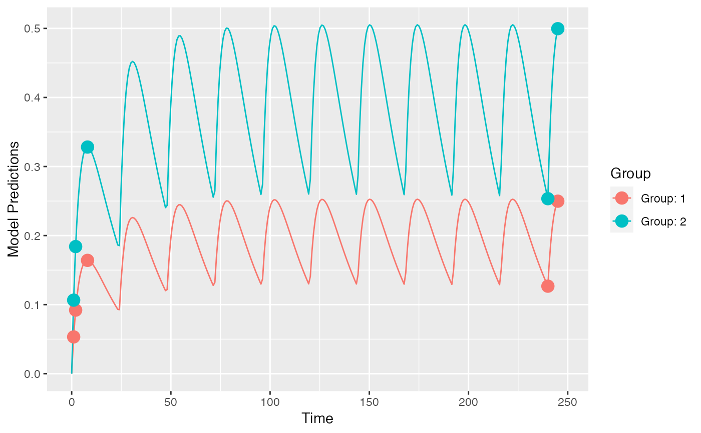

PopED.RdPopED computes optimal experimental designs for both population and individual studies based on nonlinear mixed-effect models. Often this is based on a computation of the Fisher Information Matrix (FIM).
To get started you need to define
A model.
An initial design (and design space if you want to optimize).
The tasks to perform.
There are a number of functions to help you with these tasks. The user-level functions defined below are meant to be run with a minimum of arguments (for beginners to advanced users). Many of the other functions in the package (and not listed here) are called by these user-level functions and are often not as user friendly (developer level or advanced user functions).
Define a structural model:
ff.PK.1.comp.oral.md.CL,
ff.PK.1.comp.oral.md.KE,
ff.PK.1.comp.oral.sd.CL,
ff.PK.1.comp.oral.sd.KE,
ff.PKPD.1.comp.oral.md.CL.imax,
ff.PKPD.1.comp.sd.CL.emax.
Define a residual unexplained variability model (residual error model):
feps.add.prop,
feps.add,
feps.prop.
Create an initial study design (and design space):
create.poped.database.
Evaluate the model and/or design through simulation and graphics:
plot_model_prediction,
model_prediction,
plot_efficiency_of_windows.
Evaluate the design using the FIM:
evaluate_design,
evaluate.fim,
evaluate.e.ofv.fim,
ofv_fim,
get_rse.
Optimize the design (evaluate afterwards using the above functions):
poped_optim,
See the "Examples" section below for a short introduction to using the above functions. There are several other examples, as r-scripts, in the "examples" folder in the PopED installation directory located at (run at the R command line):
system.file("examples", package="PopED").
J. Nyberg, S. Ueckert, E.A. Stroemberg, S. Hennig, M.O. Karlsson and A.C. Hooker, "PopED: An extended, parallelized, nonlinear mixed effects models optimal design tool", Computer Methods and Programs in Biomedicine, 108, 2012.
M. Foracchia, A.C. Hooker, P. Vicini and A. Ruggeri, "PopED, a software for optimal experimental design in population kinetics", Computer Methods and Programs in Biomedicine, 74, 2004.
library(PopED) ##-- Model: One comp first order absorption ## -- Analytic solution for both mutiple and single dosing ff <- function(model_switch,xt,parameters,poped.db){ with(as.list(parameters),{ y=xt N = floor(xt/TAU)+1 y=(DOSE*Favail/V)*(KA/(KA - CL/V)) * (exp(-CL/V * (xt - (N - 1) * TAU)) * (1 - exp(-N * CL/V * TAU))/(1 - exp(-CL/V * TAU)) - exp(-KA * (xt - (N - 1) * TAU)) * (1 - exp(-N * KA * TAU))/(1 - exp(-KA * TAU))) return(list( y=y,poped.db=poped.db)) }) } ## -- parameter definition function ## -- names match parameters in function ff sfg <- function(x,a,bpop,b,bocc){ parameters=c( V=bpop[1]*exp(b[1]), KA=bpop[2]*exp(b[2]), CL=bpop[3]*exp(b[3]), Favail=bpop[4], DOSE=a[1], TAU=a[2]) return( parameters ) } ## -- Residual unexplained variablity (RUV) function ## -- Additive + Proportional feps <- function(model_switch,xt,parameters,epsi,poped.db){ returnArgs <- do.call(poped.db$model$ff_pointer,list(model_switch,xt,parameters,poped.db)) y <- returnArgs[[1]] poped.db <- returnArgs[[2]] y = y*(1+epsi[,1])+epsi[,2] return(list( y= y,poped.db =poped.db )) } ## -- Define design and design space poped.db <- create.poped.database(ff_fun=ff, fg_fun=sfg, fError_fun=feps, bpop=c(V=72.8,KA=0.25,CL=3.75,Favail=0.9), notfixed_bpop=c(1,1,1,0), d=c(V=0.09,KA=0.09,CL=0.25^2), sigma=c(0.04,5e-6), notfixed_sigma=c(0,0), m=2, groupsize=20, xt=c( 1,2,8,240,245), minxt=c(0,0,0,240,240), maxxt=c(10,10,10,248,248), bUseGrouped_xt=1, a=list(c(DOSE=20,TAU=24),c(DOSE=40, TAU=24)), maxa=c(DOSE=200,TAU=24), mina=c(DOSE=0,TAU=24)) ## create plot of model without variability plot_model_prediction(poped.db, model_num_points = 300)# NOT RUN { ## create plot of model with variability plot_model_prediction(poped.db, IPRED=T, DV=T, separate.groups=T, model_num_points = 300) # }#> $ofv #> [1] 28.9197 #> #> $fim #> [,1] [,2] [,3] [,4] [,5] [,6] #> [1,] 0.05336692 -8.683963 -0.05863412 0.000000 0.000000 0.000000 #> [2,] -8.68396266 2999.851007 -14.43058560 0.000000 0.000000 0.000000 #> [3,] -0.05863412 -14.430586 37.15243290 0.000000 0.000000 0.000000 #> [4,] 0.00000000 0.000000 0.00000000 999.953587 312.240246 3.202847 #> [5,] 0.00000000 0.000000 0.00000000 312.240246 439.412556 2.287838 #> [6,] 0.00000000 0.000000 0.00000000 3.202847 2.287838 3412.005199 #> #> $rse #> bpop[1] bpop[2] bpop[3] D[1,1] D[2,2] D[3,3] #> 8.215338 10.090955 4.400304 39.833230 60.089601 27.391518 #># NOT RUN { # Optimization of sample times output <- poped_optim(poped.db, opt_xt=TRUE, parallel = TRUE) summary(output) get_rse(output$FIM, output$poped.db) plot_model_prediction(output$poped.db) # Optimization of sample times and doses output_2 <- poped_optim(poped.db, opt_xt=TRUE, opt_a=TRUE, parallel = TRUE) summary(output_2) get_rse(output_2$FIM,output_2$poped.db) plot_model_prediction(output_2$poped.db) # Optimization of sample times with only integer time points in design space # faster than continuous optimization in this case poped.db.discrete <- create.poped.database(ff_fun=ff, fg_fun=sfg, fError_fun=feps, bpop=c(V=72.8,KA=0.25,CL=3.75,Favail=0.9), notfixed_bpop=c(1,1,1,0), d=c(V=0.09,KA=0.09,CL=0.25^2), sigma=c(0.04,5e-6), notfixed_sigma=c(0,0), m=2, groupsize=20, xt=c( 1,2,8,240,245), minxt=c(0,0,0,240,240), maxxt=c(10,10,10,248,248), discrete_xt = list(0:248), bUseGrouped_xt=1, a=list(c(DOSE=20,TAU=24),c(DOSE=40, TAU=24)), maxa=c(DOSE=200,TAU=24), mina=c(DOSE=0,TAU=24), ourzero = 0) output_discrete <- poped_optim(poped.db.discrete, opt_xt=T, parallel = TRUE) summary(output_discrete) get_rse(output_discrete$FIM,output_discrete$poped.db) plot_model_prediction(output_discrete$poped.db) # Efficiency of sampling windows plot_efficiency_of_windows(output_discrete$poped.db,xt_windows=0.5) plot_efficiency_of_windows(output_discrete$poped.db,xt_windows=1) # }